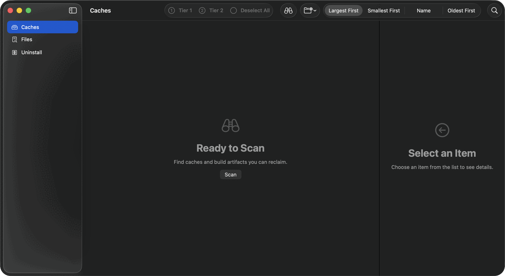

Free, and there is nothing to unlock.
The scan and removal features are included in the free app. There is no account, trial, or paid tier. Apple silicon and Intel, macOS 15 or later.
The software is provided “as is”, without warranty of any kind, express or implied. To the fullest extent permitted by law, the licensor accepts no liability for any loss or damage arising from its use, including lost data and the cost of restoring it. By downloading or using DDCC you accept the Sustainable Use License, including its No Liability section.
If it saves you some disk and you would like to say thanks, or help fund what comes next, that is always appreciated. It is entirely optional and changes nothing about the app.
- No account, ever
- No telemetry, ever
- 4.9 MB download, 8.8 MB installed
- Source-available under SUL-1.0
Four steps, and the fourth is optional.
Download and open the disk image
Drag DDCC into your Applications folder, the way you would any other Mac app.
Open it
The first run shows an empty window and a Scan button. Nothing has been examined yet and nothing is selected.
Scan, then review the rows
Every row names the tool that made it and the tier it sits in. Costly categories start locked until you review them.
Grant Full Disk Access, if you want the full picture
Without it, macOS hides parts of your disk from every app. DDCC works either way and marks affected totals as undercounts.

How to check it is what it says.
A cleaner asks for a lot of trust. Here is how to spend less of it.
Read the network claim yourself
Clone the repository and grep the source for URLSession, NWConnection and Process. The README names the single subprocess it launches and why.
Watch it with Little Snitch
Or Activity Monitor, or lsof. Run a full scan, a sweep and a removal. The app should stay quiet on the network.
Start with the Trash
Leave permanent deletion alone for your first few runs. Everything DDCC moves can be put back from the Finder.
Check the totals against the disk
Empty the Trash and compare free space before and after. DDCC's figure should be at or below what you actually got back.
The software is provided “as is”, without warranty of any kind, express or implied. To the fullest extent permitted by law, the licensor accepts no liability for any loss or damage arising from its use, including lost data and the cost of restoring it. By downloading or using DDCC you accept the Sustainable Use License, including its No Liability section.